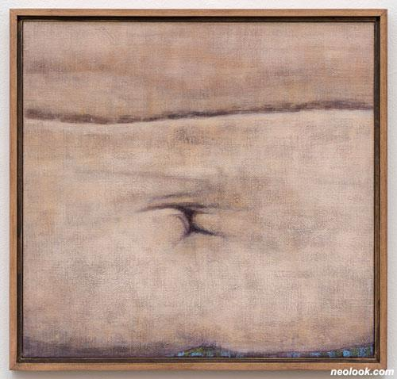
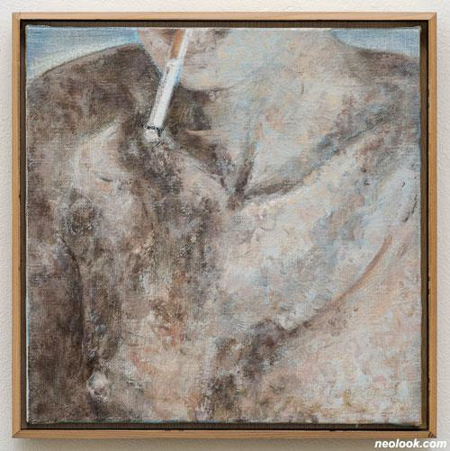

강석호
무엇을
>>사람
어떻게
>>크게 확대하여 부분만 그림, 또한 세밀한 묘사보다는 화면 안에서의 조형적 형태 중시.
왜
>>인물로서의 정체성에서 멀어지며 화면 안의 균형과 조화를 위한 조형 요소가 되기 위함.
조형에 치중한 방식은 대상에 대한 심리적 반응을 강하게 만든다.
너무나 확대되어 가장 멀어진 대상은 보는 사람으로 하여금 새삼 그 정체를 생각하게 하는 계기를 만든다.

-강석호_무제_캔버스에 유채_43×45cm_2021

-강석호_무제_캔버스에 유채_30×30cm_c.2016-2021